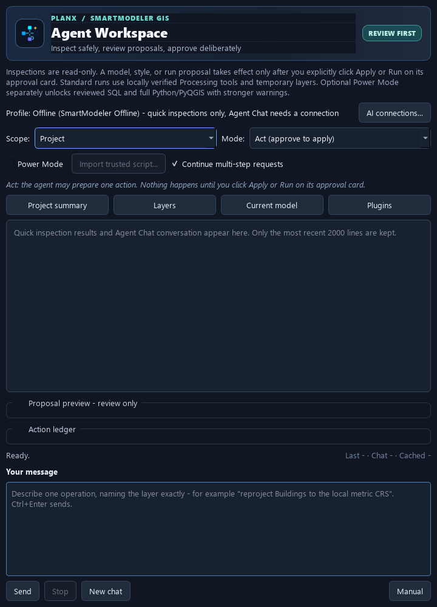
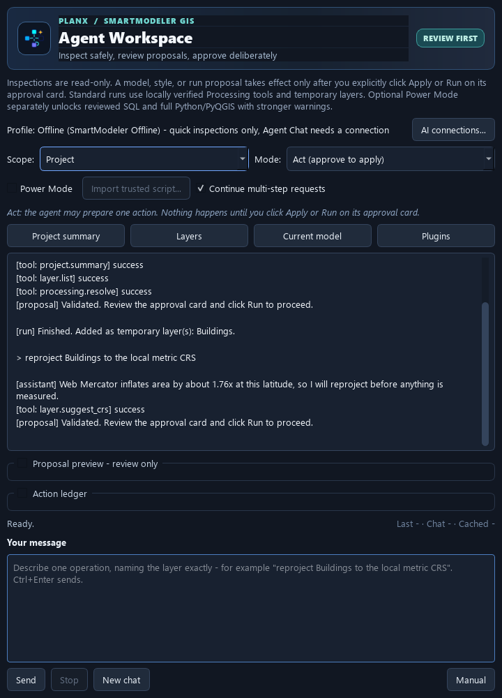
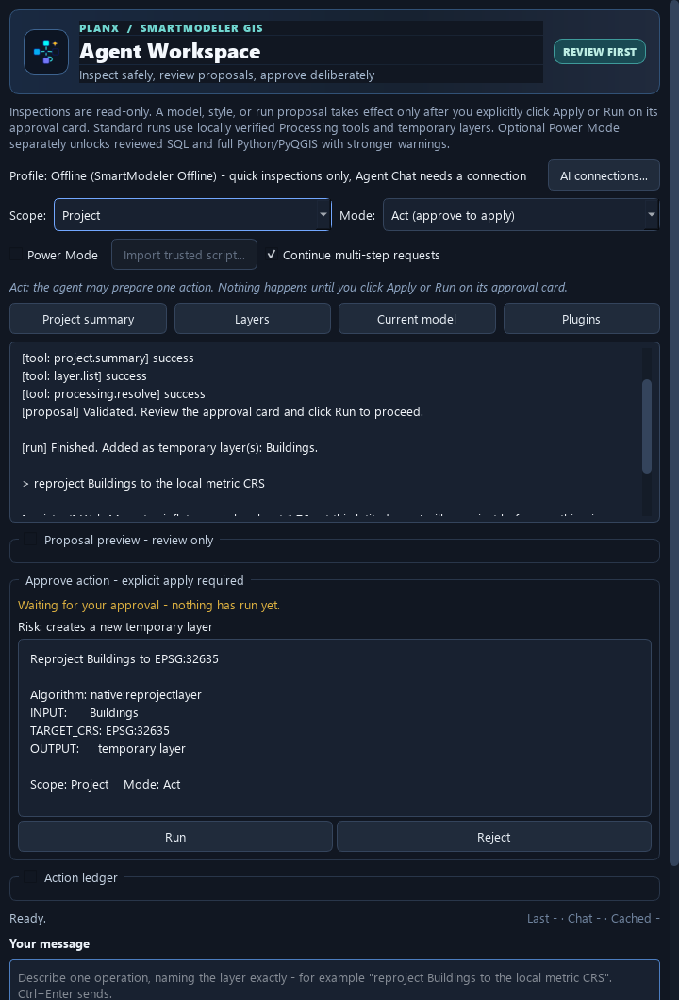
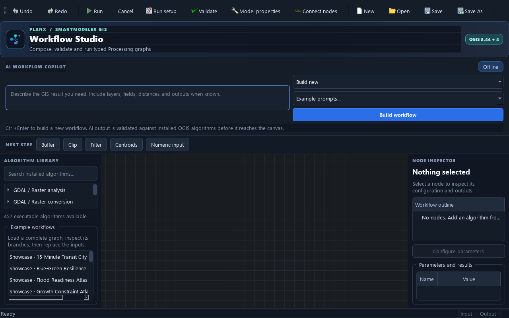
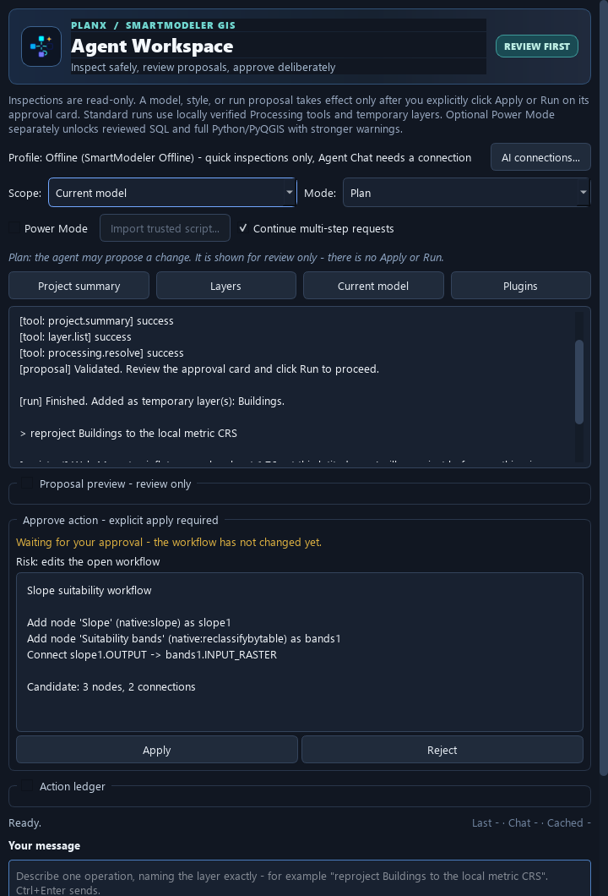
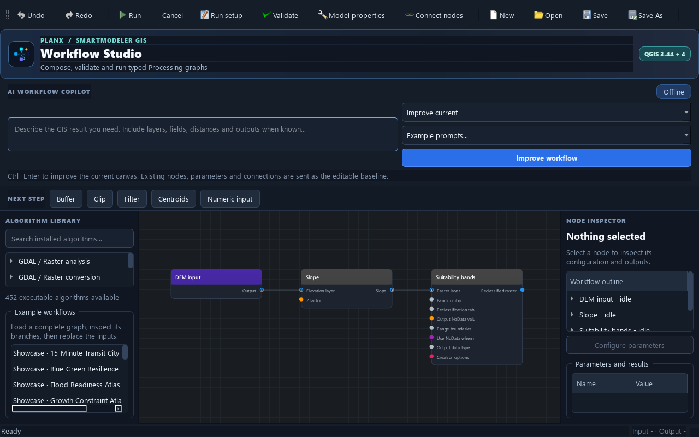
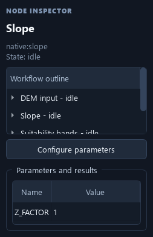
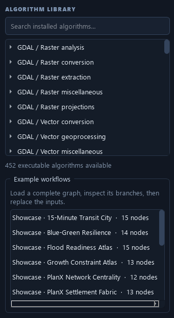
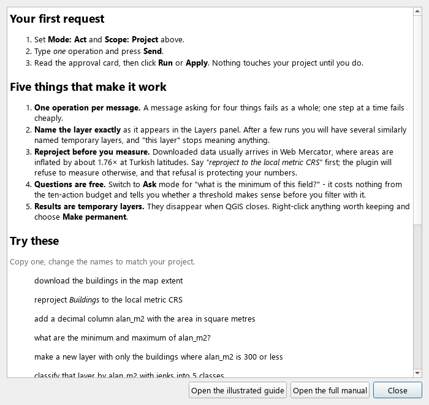

Step-by-step guide
Getting a real result out of Agent Workspace and Workflow Studio, one click at a time.
SmartModeler GIS has two ways to get work done, and they answer different questions. Agent Workspace is for “do this one thing to my project”. Workflow Studio is for “build me a process I can keep, adjust and re-run”. This guide walks through both with real screenshots of the interface and prompts you can paste.
Before you start
- Install the plugin from the QGIS Plugin Manager, or from the zip via Plugins → Manage and Install Plugins → Install from ZIP. QGIS 3.44 or QGIS 4 is required.
- Two toolbar buttons appear. One opens Workflow Studio, one opens the Agent Workspace dock.
- Connect an AI provider if you want the assistant to plan for you: AI connections… in the dock header. Without a key the plugin still works — inspections, the whole Studio, running workflows and the offline planner all run locally — but the assistant cannot compose new plans.
Which one do I use?
| You want to… | Use | Because |
|---|---|---|
| Buffer this layer by 250 m, once | Agent Workspace | One reviewed run, result in the Layers panel. |
| Answer “what is the range of this field?” | Agent Workspace, Ask mode | Read-only, costs nothing from the action budget. |
| Restyle a layer | Agent Workspace | A style proposal you can preview and reject. |
| Build a repeatable multi-step analysis | Workflow Studio | A typed graph you can save, edit and re-run on new data. |
| Hand a process to a colleague | Workflow Studio | Exports as a native QGIS .model3. |
| Have the AI build that graph for you | Both | Agent Workspace in Current model scope edits the open Studio graph. |
Agent Workspace — how it works
The assistant can look at your project, propose one action, and explain itself. It cannot execute anything. Each request runs as a short loop: it inspects with read-only tools, then hands you a proposal; you approve or reject.
1 · Open the dock
Click the Agent Workspace toolbar button. The dock opens on the right. The header tells you which profile is connected — Offline means quick inspections work but the assistant needs a connection.

2 · Choose a scope and a mode
These two selectors decide what the assistant can see and how far it may go. Set them before you type.
| Scope | What it can see and change |
|---|---|
| Project | Layers in the project. The everyday choice. |
| Active layer | Only the layer selected in the Layers panel — no need to name it. |
| Current model | The workflow open in Studio. Proposals are graph edits, not runs. |
| Plugins | Which plugins are installed and what they offer. |
| Workspace (Developer) | Bounded source inspection and exact patches. Not needed for GIS work. |
| Mode | What happens |
|---|---|
| Ask | Questions and inspections only. No proposal, no approval card, nothing to click. |
| Plan | A proposal is prepared and shown for review. There is no Apply or Run button. |
| Act | A proposal is prepared and an approval card appears. Still nothing runs until you click. |
3 · Ask for one thing
Type one operation, name the layer exactly as it appears in the Layers
panel, and press Ctrl+Enter. You will see it inspect
first — those [tool: …] lines are it reading your project, not
guessing about it.

4 · Read the approval card
This is the moment that matters. The card names the algorithm, every input it will use, and where the output goes. Check the layer is the one you meant and the numbers are the ones you asked for, then click Run.

- Status line — confirms that nothing has happened yet.
- Risk badge — computed from the action type, not from anything the model wrote.
- Body — the algorithm id and every bound input.
OUTPUT: temporary layermeans nothing on disk is touched. - Run / Apply — the only thing that executes. Reject discards it.
5 · Chain the next step
Results arrive as temporary layers, named after what you asked for. Refer to that name in your next message. Keep going one step at a time: a message that asks for four things fails as a whole, while four messages fail cheaply and tell you exactly where.
A worked session
Six messages, from an empty project to a classified result. Paste them one at a time, changing the names to match your data.
| # | What you type | What you get |
|---|---|---|
| 1 | download the buildings in the map extent | A temporary polygon layer of buildings. |
| 2 | reproject Buildings to the local metric CRS | The same buildings in a metre-based CRS. |
| 3 | add a decimal column alan_m2 with the area in square metres | A new field holding real areas. |
| 4 | what are the minimum and maximum of alan_m2? | An answer, in Ask mode, free of the action budget. |
| 5 | make a new layer with only the buildings where alan_m2 is 300 or less | A filtered temporary layer. |
| 6 | classify that layer by alan_m2 with jenks into 5 classes | A style proposal you can preview before applying. |
Phrasings that work
| Say this | Not this | |
|---|---|---|
| Layer | reproject Buildings to… — the exact name in the panel | reproject this layer — after a few runs there are five similar names |
| Scope | One operation per message | “download the roads, buffer them, then clip the parcels” |
| Numbers | buffer by 250 metres | buffer a bit |
| Fields | the field alan_m2 | the area column when three columns hold areas |
| Fixes | the field is alan_m2, not alanm2 | do it properly this time |
When you are refused
Most refusals name a specific fact and stop a run that would otherwise have succeeded and handed you a wrong answer. Correct the fact.
| Message | What it means | What to do |
|---|---|---|
| A geometry measure was requested on a layer whose CRS does not measure in metres | You are about to measure area in degrees or in Web Mercator | Reproject to a local metric CRS first |
Unavailable algorithm: native:… | The assistant guessed an id this QGIS build does not have | Nothing — it is told the real candidates and corrects itself |
| A text parameter value is required (parameter FIELD_TYPE) | A parameter was given the wrong kind of value | Nothing — the refusal names the parameter and it retries |
| This workflow receipt does not match the current graph | The graph moved since the plan was written | Nothing — the graph is re-read automatically |
| Restricted algorithm | Deliberately outside what an AI-built workflow may place | Choose another approach; this one will not be unlocked by retrying |
A < comparison needs a numeric field | On a text field QGIS compares letter by letter, so '1097' < '400' | Convert the field, or compare on a numeric one |
Workflow Studio — how it works
A workflow is a typed graph: nodes are Processing algorithms, wires carry data, and the types must match — vector cannot feed a raster input, and the Studio will not let you connect them. The graph is inert until you press Run.
1 · Open the Studio
Click the Workflow Studio toolbar button. You get the canvas in the middle, the algorithm library on the left, the node inspector on the right, and the AI copilot bar across the top.

2 · Describe the workflow you want
Two ways in, both ending at an approval card:
- The copilot bar at the top of the Studio — type what you need and press Ctrl+Enter.
- Agent Workspace in Current model scope — the assistant edits the open graph and shows you the operations before anything changes.

3 · Read the graph you were given
Click Apply and the nodes appear, already laid out left to right in the order the data flows. Follow the wires: that is the analysis, and it is now yours to change.

4 · Inspect and configure a node
Select a node to see its parameters and outputs on the right. Press Enter or double-click to open the full parameter form. The outline in the inspector is also the screen-reader path through the workflow.

5 · Run setup, validate, run
- Run setup — one dialog listing every input the workflow still needs. This is where you choose the actual layers; the AI never binds your data for you.
- Validate — checks types, required inputs and connections before anything executes.
- Run (Ctrl+R) — results are added only after the whole workflow succeeds. Esc cancels.
.model3 file that opens in the Processing modeler too.
Building one by hand
The AI is optional. Everything it does, you can do directly:
- Search the algorithm library (Ctrl+F) and press Enter to add the highlighted algorithm.
- Drag from an output port to an input port to connect two nodes, or use Connect nodes (Ctrl+Shift+C) if you prefer not to drag.
- Next step buttons above the canvas suggest what usually follows the node you have selected.
- F fits the graph to the window; Auto layout re-arranges everything.

A worked workflow
Slope suitability, the graph in the screenshots above, from nothing:
- Open Workflow Studio on a project that has a DEM.
- In the copilot bar: Calculate slope from the DEM and classify it into planning suitability bands
- Read the card, click Apply. Three nodes appear, connected.
- Select Suitability bands and open its parameter form. Enter your own class breaks — the AI proposes a structure, you own the thresholds.
- Run setup → choose your DEM for the raster input.
- Validate, then Run.
- Save the workflow. Next month, point it at a different DEM.
To extend it, go back to the dock in Current model scope and ask for one more step — “add distance to roads and combine it with the slope bands”. Your existing nodes keep their positions; only the new ones are placed.
Help inside QGIS
You do not have to come back here. The plugin carries a short guide of its own, and both dialogs link to this page.

Where to go next
- The reference manual — every algorithm, every tool, the full agent protocol and the safety model.
- Issues — include your QGIS version, the plugin version, the exact steps and the Processing log, with private paths removed.
Screenshots on this page are rendered from the shipped interface by
docs/build_screenshots.py, so they cannot drift away from the
version they document. Example conversations and workflows are illustrative.